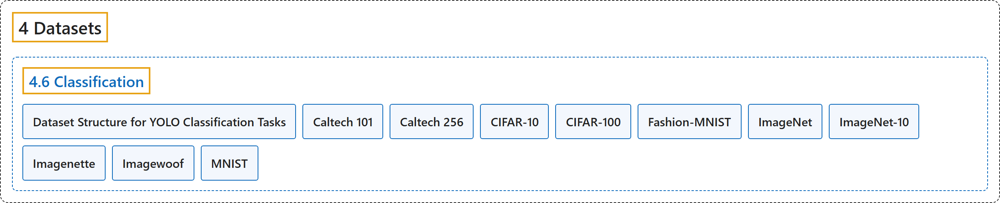

4.6 Classification
Classification

Glossary
| Term | Definition | 中文翻译 | Source |
|---|---|---|---|
| 4.6 Classification 分类数据集 |
(No definition) | （无定义） | Ultralytics, n.d.-f, "Image Classification Datasets Overview" |
| Dataset Structure for YOLO Classification Tasks YOLO 分类任务的数据集结构 |
"For Ultralytics YOLO classification tasks, the dataset must be organized in a specific split-directory structure under the root directory." |
对于 Ultralytics YOLO 分类任务，数据集必须在 root 目录下按特定的划分目录结构组织。 |
Ultralytics, n.d.-f, "Dataset Structure for YOLO Classification Tasks", para. 1 |
| Caltech 101 Caltech-101 |
"The Caltech-101 dataset is a classic image classification benchmark of 9,144 images spanning 101 object categories plus one background class." | Caltech-101 数据集是一个经典的图像分类基准，含 9,144 张图像，涵盖 101 个物体类别和一个背景类别。 | Ultralytics, n.d.-a, "Caltech-101 Dataset", para. 1 |
| Caltech 256 Caltech-256 |
"The Caltech-256 dataset is a classic image classification benchmark of 30,607 images spanning 256 object categories plus one background class." | Caltech-256 数据集是一个经典的图像分类基准，含 30,607 张图像，涵盖 256 个物体类别和一个背景类别。 | Ultralytics, n.d.-b, "Caltech-256 Dataset", para. 1 |
| CIFAR-10 CIFAR-10 |
"The CIFAR-10 (Canadian Institute For Advanced Research) dataset is a classic image classification benchmark of 60,000 32x32 color images evenly split across 10 classes — airplane, automobile, bird, cat, deer, dog, frog, horse, ship, and truck." | CIFAR-10（加拿大高等研究院）数据集是一个经典的图像分类基准，含 60,000 张 32×32 的彩色图像，平均分为 10 个类别：飞机、汽车、鸟、猫、鹿、狗、青蛙、马、船和卡车。 | Ultralytics, n.d.-c, "CIFAR-10 Dataset", para. 1 |
| CIFAR-100 CIFAR-100 |
"The CIFAR-100 (Canadian Institute For Advanced Research) dataset is an image classification benchmark of 60,000 32x32 color images spread evenly across 100 fine-grained classes (600 images each), which are in turn grouped into 20 coarse superclasses." | CIFAR-100（加拿大高等研究院）数据集是一个图像分类基准，含 60,000 张 32×32 的彩色图像，平均分布在 100 个细粒度类别中（每类 600 张），这些类别又归为 20 个粗粒度超类。 | Ultralytics, n.d.-d, "CIFAR-100 Dataset", para. 1 |
| Fashion-MNIST Fashion-MNIST |
"The Fashion-MNIST dataset is an image classification benchmark of 70,000 28x28 grayscale images of Zalando's clothing articles, evenly split across 10 classes — T-shirt/top, trouser, pullover, dress, coat, sandal, shirt, sneaker, bag, and ankle boot." | Fashion-MNIST 数据集是一个图像分类基准，含 70,000 张 28×28 的 Zalando 服装商品灰度图像，平均分为 10 个类别：T 恤/上衣、裤子、套头衫、连衣裙、外套、凉鞋、衬衫、运动鞋、包和短靴。 | Ultralytics, n.d.-e, "Fashion-MNIST Dataset", para. 1 |
| ImageNet ImageNet |
"The Ultralytics ImageNet dataset (data="imagenet") is the ImageNet-1k / ILSVRC-2012 subset used to train and benchmark image classification models." | Ultralytics ImageNet 数据集（data="imagenet"）是用于训练和评测图像分类模型的 ImageNet-1k / ILSVRC-2012 子集。 | Ultralytics, n.d.-g, "ImageNet Dataset", para. 1 |
| ImageNet-10 ImageNet-10 |
"The Ultralytics ImageNet10 dataset (data="imagenet10") is a tiny 24-image subset of ImageNet spanning its first 10 classes, built for continuous-integration tests, sanity checks, and fast validation of training pipelines." | Ultralytics ImageNet10 数据集（data="imagenet10"）是一个只有 24 张图像的 ImageNet 子集，涵盖其前 10 个类别，用于持续集成测试、健全性检查和快速验证训练流程。 | Ultralytics, n.d.-h, "ImageNet10 Dataset", para. 1 |
| Imagenette Imagenette |
"The ImageNette dataset is a subset of ImageNet with 10 easily distinguishable classes, created by fast.ai to provide a quicker, easier-to-use version of ImageNet for software development and education." | ImageNette 数据集是 ImageNet 的一个子集，含 10 个容易区分的类别，由 fast.ai 创建，为软件开发和教学提供一个更快、更易用的 ImageNet 版本。 | Ultralytics, n.d.-i, "ImageNette Dataset", para. 1 |
| Imagewoof Imagewoof |
"The ImageWoof dataset is a subset of ImageNet consisting of 10 dog-breed classes that are deliberately hard to tell apart, created by fast.ai as a tougher challenge for image classification algorithms." | ImageWoof 数据集是 ImageNet 的一个子集，由 10 个故意选得难以区分的狗品种类别组成，由 fast.ai 创建，作为图像分类算法更难的挑战。 | Ultralytics, n.d.-j, "ImageWoof Dataset", para. 1 |
| MNIST MNIST |
"The MNIST (Modified National Institute of Standards and Technology) dataset is an image classification benchmark of 70,000 28x28 grayscale images of handwritten digits spanning 10 classes — the digits 0 through 9." | MNIST（改进的美国国家标准与技术研究院）数据集是一个图像分类基准，含 70,000 张 28×28 的手写数字灰度图像，共 10 个类别，即数字 0 到 9。 | Ultralytics, n.d.-k, "MNIST Dataset", para. 1 |
References
Ultralytics. (n.d.-a). Caltech-101 Dataset. Ultralytics YOLO Docs (ultralytics 8.4.194). Retrieved October 31, 2026, from https://docs.ultralytics.com/datasets/classify/caltech101/
Ultralytics. (n.d.-b). Caltech-256 Dataset. Ultralytics YOLO Docs (ultralytics 8.4.194). Retrieved October 31, 2026, from https://docs.ultralytics.com/datasets/classify/caltech256/
Ultralytics. (n.d.-c). CIFAR-10 Dataset. Ultralytics YOLO Docs (ultralytics 8.4.194). Retrieved October 31, 2026, from https://docs.ultralytics.com/datasets/classify/cifar10/
Ultralytics. (n.d.-d). CIFAR-100 Dataset. Ultralytics YOLO Docs (ultralytics 8.4.194). Retrieved October 31, 2026, from https://docs.ultralytics.com/datasets/classify/cifar100/
Ultralytics. (n.d.-e). Fashion-MNIST Dataset. Ultralytics YOLO Docs (ultralytics 8.4.194). Retrieved October 31, 2026, from https://docs.ultralytics.com/datasets/classify/fashion-mnist/
Ultralytics. (n.d.-f). Image Classification Datasets Overview. Ultralytics YOLO Docs (ultralytics 8.4.194). Retrieved October 31, 2026, from https://docs.ultralytics.com/datasets/classify/
Ultralytics. (n.d.-g). ImageNet Dataset. Ultralytics YOLO Docs (ultralytics 8.4.194). Retrieved October 31, 2026, from https://docs.ultralytics.com/datasets/classify/imagenet/
Ultralytics. (n.d.-h). ImageNet10 Dataset. Ultralytics YOLO Docs (ultralytics 8.4.194). Retrieved October 31, 2026, from https://docs.ultralytics.com/datasets/classify/imagenet10/
Ultralytics. (n.d.-i). ImageNette Dataset. Ultralytics YOLO Docs (ultralytics 8.4.194). Retrieved October 31, 2026, from https://docs.ultralytics.com/datasets/classify/imagenette/
Ultralytics. (n.d.-j). ImageWoof Dataset. Ultralytics YOLO Docs (ultralytics 8.4.194). Retrieved October 31, 2026, from https://docs.ultralytics.com/datasets/classify/imagewoof/
Ultralytics. (n.d.-k). MNIST Dataset. Ultralytics YOLO Docs (ultralytics 8.4.194). Retrieved October 31, 2026, from https://docs.ultralytics.com/datasets/classify/mnist/